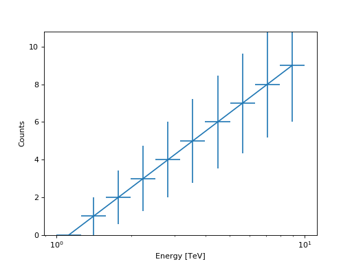

CountsSpectrum¶
-
class
gammapy.spectrum.CountsSpectrum(energy_lo, energy_hi, data=None, interp_kwargs=None)[source]¶ Bases:
objectGeneric counts spectrum.
Parameters: energy_lo :
QuantityLower bin edges of energy axis
energy_hi :
QuantityUpper bin edges of energy axis
data :
Quantity, array-likeCounts
Examples
from gammapy.spectrum import CountsSpectrum import numpy as np import astropy.units as u ebounds = np.logspace(0,1,11) * u.TeV data = np.arange(10) * u.ct spec = CountsSpectrum( energy_lo=ebounds[:-1], energy_hi=ebounds[1:], data=data, ) spec.plot(show_poisson_errors=True)
Attributes Summary
default_interp_kwargsDefault interpolation kwargs energytotal_countsTotal number of counts Methods Summary
copy()A deep copy of self. fill(events)Fill with list of events. from_hdulist(hdulist[, hdu1, hdu2])Read OGIP format hdulist peek([figsize])Quick-look summary plots. plot([ax, energy_unit, show_poisson_errors, …])Plot as data points. plot_hist([ax, energy_unit, show_energy])Plot as histogram. read(filename[, hdu1, hdu2])Read from file. rebin(parameter)Rebin. to_hdulist()Convert to HDUList.to_table()Convert to Table.write(filename, **kwargs)Write to file. Attributes Documentation
-
default_interp_kwargs= {'bounds_error': False, 'method': 'nearest'}¶ Default interpolation kwargs
-
energy¶
-
total_counts¶ Total number of counts
Methods Documentation
-
fill(events)[source]¶ Fill with list of events.
TODO: Move to
NDDataArrayParameters: events :
Quantity,gammapy.data.EventList,List of event energies
-
plot(ax=None, energy_unit='TeV', show_poisson_errors=False, show_energy=None, **kwargs)[source]¶ Plot as data points.
kwargs are forwarded to
errorbarParameters: ax :
axis(optional)Axis instance to be used for the plot
energy_unit : str,
Unit, optionalUnit of the energy axis
show_poisson_errors : bool, optional
Show poisson errors on the plot
show_energy :
Quantity, optionalShow energy, e.g. threshold, as vertical line
Returns: ax:
axisAxis instance used for the plot
-
plot_hist(ax=None, energy_unit='TeV', show_energy=None, **kwargs)[source]¶ Plot as histogram.
kwargs are forwarded to
histParameters: ax :
axis(optional)Axis instance to be used for the plot
energy_unit : str,
Unit, optionalUnit of the energy axis
show_energy :
Quantity, optionalShow energy, e.g. threshold, as vertical line
-
rebin(parameter)[source]¶ Rebin.
Parameters: parameter, int
Number of bins to merge
Returns: rebinned_spectrum :
CountsSpectrumRebinned spectrum
-
{kind=link}
{kind=link}